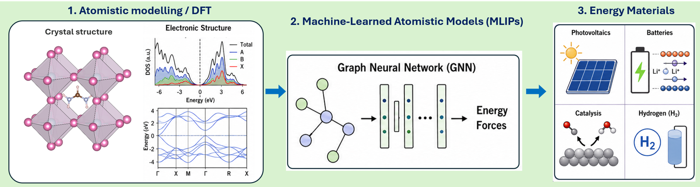
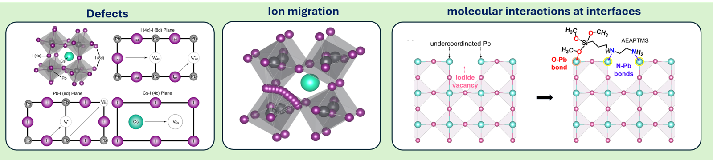
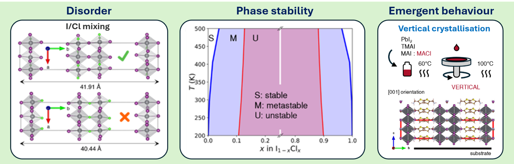
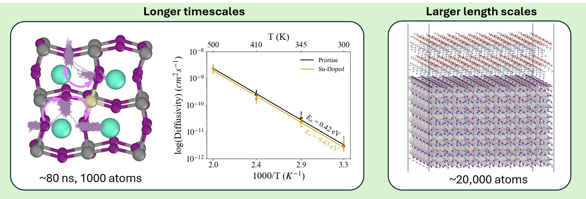

Vision

Many of the phenomena that decide whether an energy material succeeds or fails — ion migration, phase stability, degradation, interface evolution, and coupled charge, ion, and heat transport — occur over length and time scales that conventional first-principles simulations cannot reach. Recent advances in machine-learned atomistic modelling bridge this gap: they retain near first-principles accuracy while enabling simulations of realistic structures over far larger spatial and temporal scales.
My research uses these tools to address fundamental questions in materials chemistry, condensed matter physics, and energy materials. My long-term goal is to develop predictive computational frameworks that connect electronic structure, atomistic dynamics, and material functionality — enabling the accelerated discovery and design of next-generation functional materials. Halide perovskite photovoltaics are a deliberate starting point rather than a boundary: the same physical framework transfers directly to thermoelectrics, catalysis, batteries, hydrogen storage, and materials built from rare-earth and critical-mineral elements.
Research Themes
Defects, Interfaces, and Non-Equilibrium Dynamics

Defects and interfaces often control the stability and performance of functional materials. Atoms and ions move through complex local environments, interact with surfaces and grain boundaries, and respond to illumination, temperature, electric fields, and chemical additives — intrinsically dynamic processes involving rare events that static calculations alone cannot capture.
I study how local bonding, defect chemistry, and interface structure govern non-equilibrium processes such as ion migration, defect clustering, passivation, and degradation. In halide perovskites, this work has spanned mixed Pb–Sn systems, additive-engineered compositions, and surface-passivated structures, using machine-learning-enhanced models to explore migration pathways and interface configurations at a scale impractical for conventional first-principles methods. The same ideas extend to ion conductors, battery interfaces, hydrogen-storage materials, and catalytic surfaces.
Disorder, Phase Stability, and Emergent Behaviour

Functional materials often derive their useful properties from chemical complexity — mixed compositions, alloying, dopants, vacancies, and low-dimensional structures. That same complexity creates vast configurational spaces where small changes in local atomic arrangement strongly influence macroscopic behaviour.
I investigate why some mixed-composition materials remain homogeneous while others phase segregate, how local ordering influences crystallisation pathways, and how disorder shapes structural and electronic functionality. Recent examples include configurational searches explaining vertical crystallisation in low-dimensional perovskites and machine-learning-enhanced studies of miscibility gaps in mixed-halide compositions. The goal: design principles connecting composition, local structure, and phase behaviour — applicable to battery electrodes, catalysts, and critical-mineral-substituted alloys alike.
Transport Across Length and Time Scales

In functional materials, electronic, ionic, and thermal transport are often strongly coupled: ion motion influences electronic properties and degradation, lattice vibrations control heat dissipation and carrier scattering, and local disorder alters both charge and mass transport.
Building on my work in thermoelectrics and interest in hot-carrier cooling, I combine first-principles calculations with machine-learning-enhanced simulations to study ionic transport in complex semiconductors, charge-carrier dynamics, electron–phonon interactions, and thermal transport in chemically complex systems — moving beyond idealised static structures to the local environments and dynamical fluctuations present in real materials.
Machine-Learning Approaches for Materials Design
A unifying thread across my research is using machine learning to extend the reach of atomistic simulation with physical insight, careful validation, and clear connection to experiments. I develop computational workflows that integrate first-principles electronic structure methods, machine-learned interatomic potentials (GAP, MACE), configurational sampling, and data-driven materials discovery — designed to answer specific materials chemistry questions rather than simply generate large datasets.
Machine-learned models are validated against first-principles calculations, known physical limits, and experimental trends, ensuring simulations that are not only computationally efficient but physically meaningful.
Collaboration
I work in highly interdisciplinary environments, closely integrated with materials synthesis, advanced characterisation, and device engineering. Current and past collaborations include the groups of Prof. Saiful Islam and Prof. Henry Snaith (Oxford), Prof. Giulia Grancini (Pavia), Prof. Robert Hoye (Oxford), Dr. Ricardo Grau-Crespo (Reading / QMUL), and Prof. Aftab Alam (IIT Bombay), alongside experimental partners across photovoltaics, optoelectronics, and thermoelectrics.